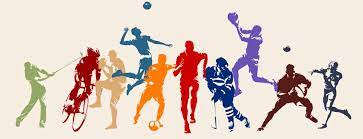

I have many passions that drive who I am. One of those passions has always been sports. I have always loved playing all sorts of sports in any kind of scenario. I have played on teams for the following sports: basketball, soccer, and ultimate frisbee. I also love to play ping pong, pickleball, tennis, volleyball, and frisbee golf. Overall, sports have always played a vital role in who I am.
Music has also played a vital role in my life. I was raised playing the piano and later on also learned to play the bagpipes. Through this experience, I have been able to play at a halftime show and various parades. Both piano and bagpipes are passions of mine that have enabled me to learn how to balance my life better and also how to be synchronized with other musicians when playing together. Below is a video of one of my favorite bagpipe songs. Also, see my Bagpipe Band Website!

The last passion that I will mention is travel. I haven't been able to travel a lot, however, when I have been able to it has been great! My favorite trip was a two year trip to Scotland and Ireland. I loved the scenery and getting to know the people. I truly believe that it is the most beautiful place on earth, and would recommend anyone to see it!
Contact Me:
Phone: 555-555-5555 | Email: noreply@donotemail.com